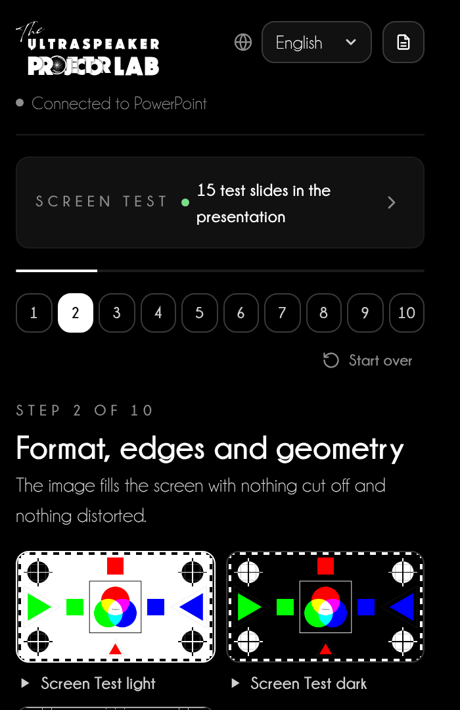
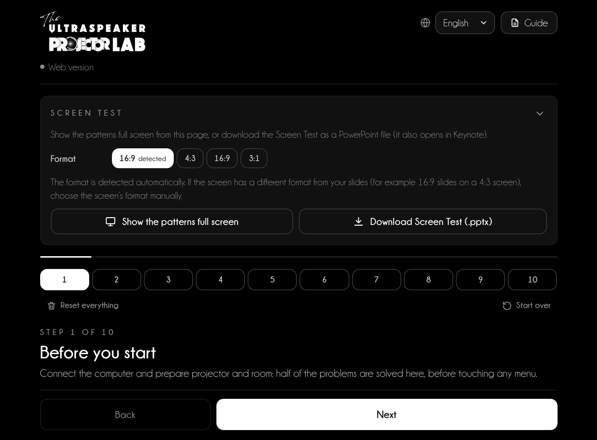
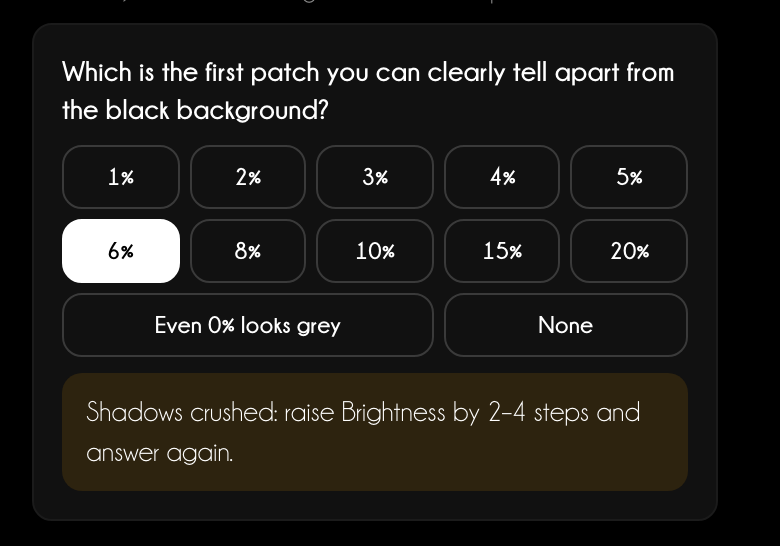
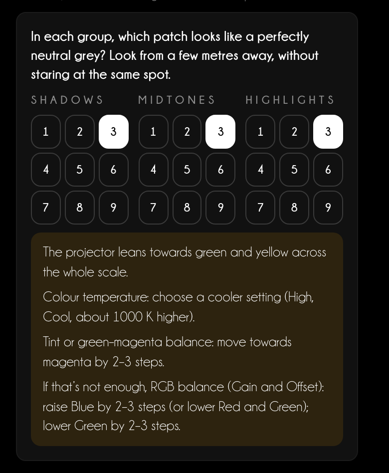
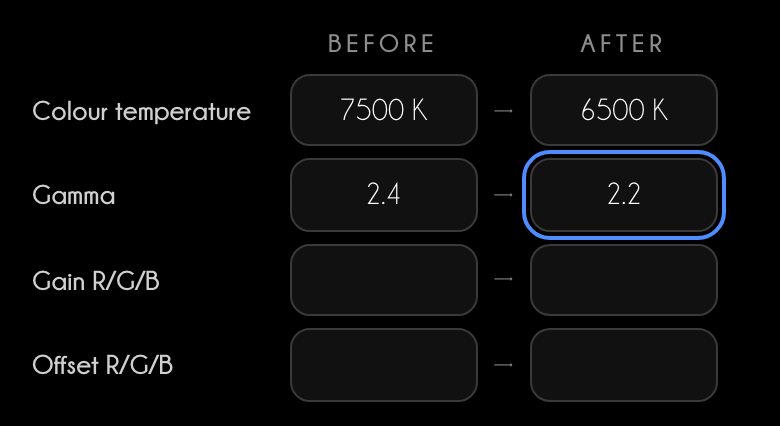
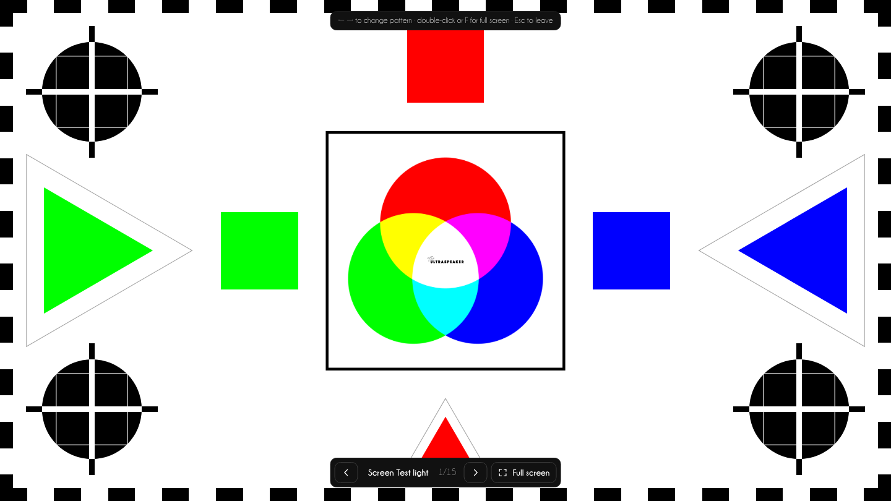
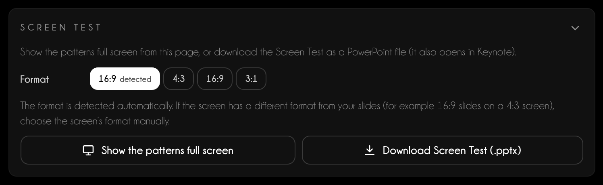
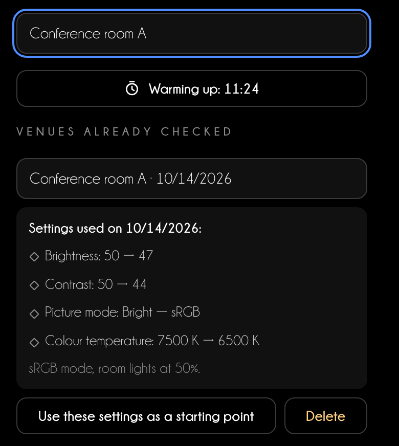
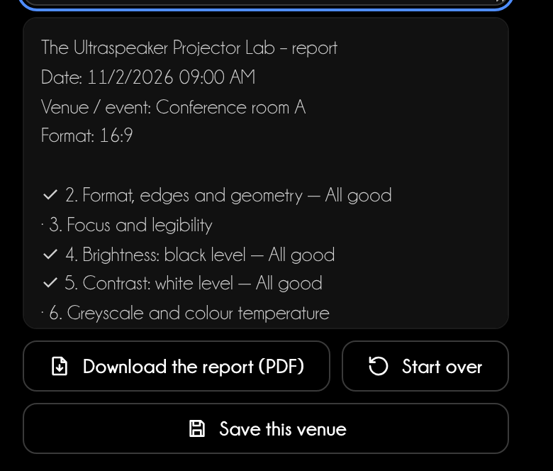

User guide
The projector right
before you speak
Projector Lab guides you through 10 steps to set the projector’s format, focus, black, white and colour, with test patterns made for your presentation.

User guide
Projector Lab guides you through 10 steps to set the projector’s format, focus, black, white and colour, with test patterns made for your presentation.
Contents
Every room has a different projector. Projector Lab has you show a test pattern, tells you what to look at and which projector menu to adjust. In 10–15 minutes your slides and clinical photos look as they do on your monitor.
In PowerPoint
Home tab → The Ultraspeaker group → Projector Lab. The pane opens on the right. Insert the test slides adds 15 test slides to the presentation in its format, with the instructions in the speaker notes.
In the browser
niki977.github.io/ultraspeaker-projector-lab, with nothing to install. Show the patterns full screen on the projector or download the Screen Test as .pptx for PowerPoint and Keynote. On your phone the procedure stays at hand.
What stays on the device
Language, procedure in progress, timer and saved venues stay in the browser or PowerPoint storage. No data is sent to any server.

| Feature | PowerPoint | Web version |
|---|---|---|
| Test slides in the presentation | Yes | — |
| Full-screen patterns | In a window | Yes |
| Screen Test .pptx to download | — | Yes |
| Clinical photo | In the test slide | In the full-screen pattern |
| “Reset everything” | — | Yes |
The same page in the web version and in the pane: the Screen Test at the top, the 10 steps below.

1 2 3 4 5 6 7Every step has the same structure. Show the pattern, look from the back of the room, answer the question and the Lab tells you which menu to adjust, in which direction and by how much.
The “What do you see?” question
In steps 4–8 you tap what you see: for example the first patch you can tell from black. The answer gives the correction, and the step result updates on its own.
Colour cast
In step 6 choose, in each group, the grey that looks most neutral. If it is not number 5 in the centre, the Lab recognises the cast and points to colour temperature, tint or RGB gain.


Settings used
Note the projector settings before and after adjusting: they go into the report and the saved venues.

Connect the computer and prepare projector and room: half of the problems are solved here, before touching any menu.
The image fills the screen with nothing cut off and nothing distorted.
Sharp stars in the centre and corners, and the minimum text size readable from the back of the room.
Detail in the shadows without a greyish black.
Full whites that don’t clip: light details stay visible.
Neutral greys and even steps: the foundation for correct colour.
Rich but faithful colours, no shifted hues and no clumped areas.
Your clinical photos must show enamel, margins and tissue as you see them on your monitor.
No blotches, coloured zones or fixed dots in the image.
Check a real slide, note the settings and remove the test slides.
15 patterns, in the same order as the steps. They adapt to the real shape of the screen: the edges of the pattern match those of the projector.

In the web version choose the screen format and press Download Screen Test (.pptx). The file contains the 15 slides with notes; Keynote opens it with File → Open.

1 2 3| Step | Patterns |
|---|---|
| 2 · Format, edges and geometry | Screen Test light, Screen Test dark, Grid |
| 3 · Focus and legibility | Focus |
| 4 · Brightness: black level | Black |
| 5 · Contrast: white level | White |
| 6 · Greyscale and colour temperature | Greys, Grey comparison |
| 7 · Colour and saturation | SMPTE bars, Colour ramps |
| 8 · Clinical references | Clinical, Your photo |
| 9 · Uniformity and cleanliness | Full white, Full grey, Full black |
Three tools so you do not start from scratch in every room.
In step 1 press Start warm-up timer (15 min). A lamp needs at least 15 minutes, ideally 30; laser and LED settle in 5–10.

In step 10 the report sums up date, format, results, answers and settings. Add a note and press Download the report (PDF): you get a PDF to send to the AV desk (in the panel it opens in your browser).
Start over clears results, answers and settings but keeps the saved venues. In the web version Reset everything also deletes venues and format.

The best adjustment does not replace preparation.
Speaker tip
Arrive 30 minutes early. Switch the projector on straight away, run the procedure while it warms up and finish with your most demanding slide: a clinical photo, the smallest text, a chart.
If the AV desk will not let you touch the projector
Ask for three precise things: sRGB or Presentation mode, overscan off, keystone at minimum. Do the rest from your computer: native resolution, RGB Full colour format, Night Shift and Night light off.
| Screen | What happens | What to do |
|---|---|---|
| 4:3 with 16:9 slides | Black bars above and below | Accept the bars; choose 4:3 in the Screen Test to check the screen edges |
| 16:9 with 4:3 slides | Black bars at the sides | Do not stretch the image: circles would turn oval |
| 3:1 (panoramic screens) | Small slides in the centre, or cropped | Ask for the format beforehand; test with the 3:1 Screen Test and the largest text |
Support
Write to info@theultraspeaker.com with your computer and PowerPoint version.

Knowledge is not enough.
From expert to Ultraspeaker.
theultraspeaker.com · info@theultraspeaker.com